Publication
Stefanie Mueller, Anna Seufert, Huaishu Peng, Robert Kovacs,
Kevin Reuss, Francois Guimbretiere, Patrick Baudisch FormFab: Continuous Interactive Fabrication. In Proceedings of TEI ’19 (to appear). PDF Video Video
Kevin Reuss, Francois Guimbretiere, Patrick Baudisch FormFab: Continuous Interactive Fabrication. In Proceedings of TEI ’19 (to appear). PDF Video Video
FormFab:
Continuous Interactive Fabrication.
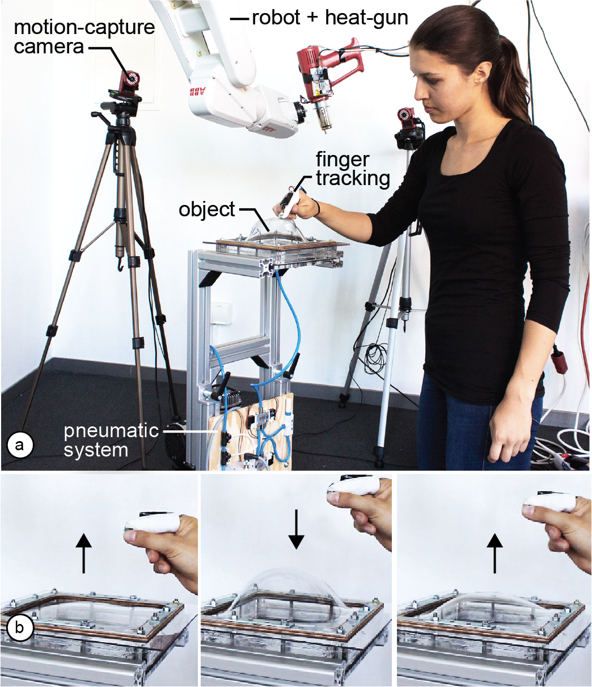
Figure 1. (a) FormFab changes the workpiece continuously while the user is interacting with it. First, a heat-gun warms up the workpiece. Once the material has become compliant, (b) the user’s hand gesture interactively controls a pneumatic system that applies pressure or vacuum, pushing the material outwards or pulling it inwards.
Several systems have illustrated the concept of interactive fabrication, i.e. rather than working through a digital editor, users make edits directly on the physical workpiece. However, so far the interaction has been limited to turn-taking, i.e., users first perform a command and then the system responds with physical feedback. In this paper, we present a first step towards interactive fabrication that changes the workpiece continuously while the user is manipulating it.
To achieve this, our system FormFab does not add or subtract material but instead reshapes it (formative fabrication). A heat gun attached to a robotic arm warms up a thermoplastic sheet until it becomes compliant; users then control a pneumatic system that applies either pressure or vacuum thereby pushing the material outwards or pulling it inwards.
Since FormFab reshapes the workpiece continuously while users are moving their hands, users can interactively explore different sizes of a shape with a single interaction.
Introduction
Recently, Willis et al. [28] proposed the concept of Interactive Fabrication. The key idea is to bring the principles of direct manipulation [20] to the editing of physical objects: Instead of working on a digital 3D model and producing the physical version only at the end, users make edits directly on the physical workpiece and see it change immediately.
Early interactive fabrication systems, such as Shaper [28], CopyCAD [5], and constructable [14], allow for hands-on editing on the physical workpiece. However, their interaction is best described as turn-taking: users first provide input to the system and then the system responds with physical feedback. Since there are two discrete steps, users can only explore one option per turn [2].
In this paper, we propose an interactive fabrication system that can change a workpiece’s shape continuously while the user is interacting. This enables users to explore different sizes of a shape with a single interaction rather than in multiple turns. We accomplish this using a process called formative fabrication, which rather than adding or subtracting, reshapes the existing material. In our system, users interactively control a pneumatic air pump that applies either pressure or vacuum to a compliant thermoplastic sheet, thereby pushing the material outwards or pulling it inwards (Figure 1b).
FormFab System
FormFab is an interactive fabrication system based on formative fabrication that allows users to explore different sizes of a shape by continuously changing the workpiece while the user is interacting with it (Figure 1b).
First, users draw an outline of the area they want to reshape using their index finger (Figure 2a). When the user removes the finger, the path is beautified by our software. The robotic arm then warms up the area using a heat gun (Figure 2b).
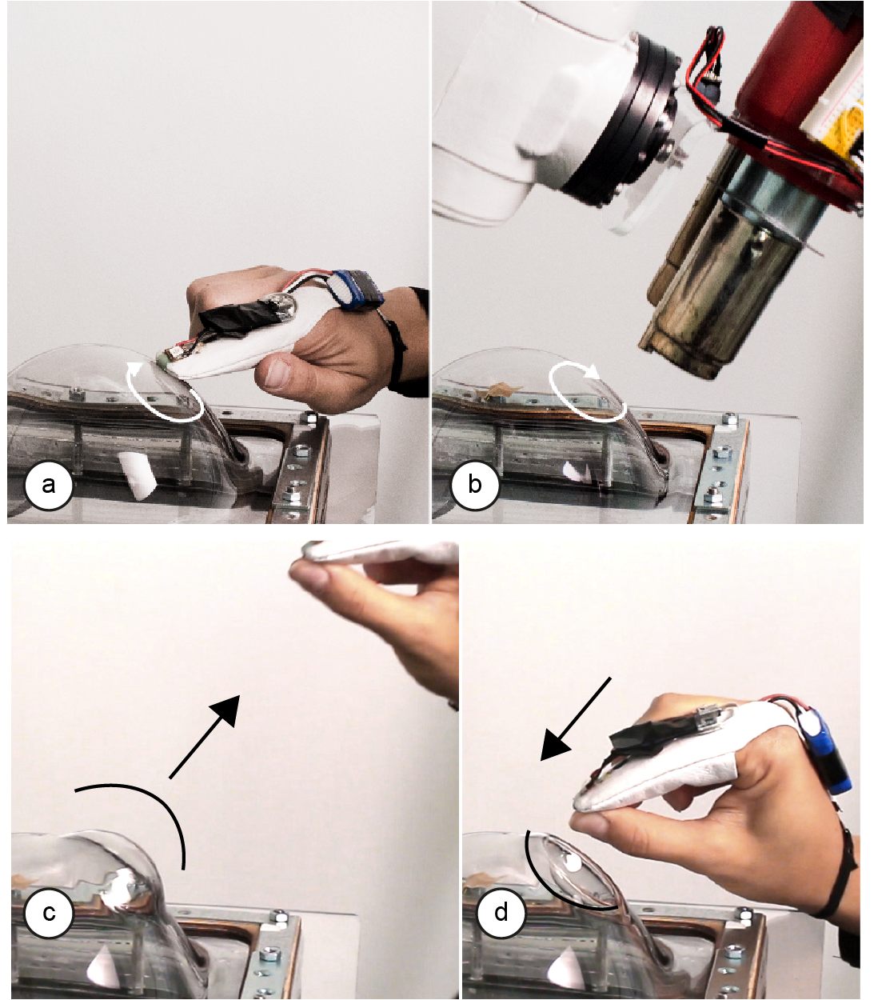
Figure 2: (a,b) Drawing outline and heating. (c,d) Once the user interacts, the workpiece changes continuously, i.e., here we show one interaction in which the same part is first pulled out and then pushed back in.
After the material has reached its compliance point, the robotic arm moves out of the way. The user can then perform a pinch gesture, which activates the pneumatic system. If the user’s hand moves away from the workpiece, the pneumatic system increases the air pressure and the compliant area inflates (Figure 2c). If the user’s hand moves back towards the workpiece, the pneumatic system reduces the pressure and the compliant area deflates (Figure 2d).
While step 1 of the user interaction, i.e., drawing the outline, still follows the turn-taking interaction model, step 2, i.e., defining the extrusion amount provides physical feedback while the user is interacting.
Walkthrough: Making the sculpture of a teddy headFigure 3 shows the steps to make the sculpture of a teddy bear’s head using our system. We first draw a circle onto the flat workpiece and after the robot has heated up the area, we reshape the sheet to explore different dimensions for the head—making it larger and smaller within seconds until we find the right shape (Figure 1b). Using the same interaction steps, we add the ears to the head of the teddy (Figure 3a/b): As can be seen in the accompanying video, we reshape the right ear for about 30s continuously to find the best shape, and then add the left ear accordingly. We now add the snout: to explore the best size, we repeatedly scale the snout by moving our hand to different distances from the workpiece. We then add a tip on top of it. In the last step, we create the eyes (Figure 3c). This time, we move our hand towards the workpiece, thereby applying vacuum that extrudes the eyes inwards. 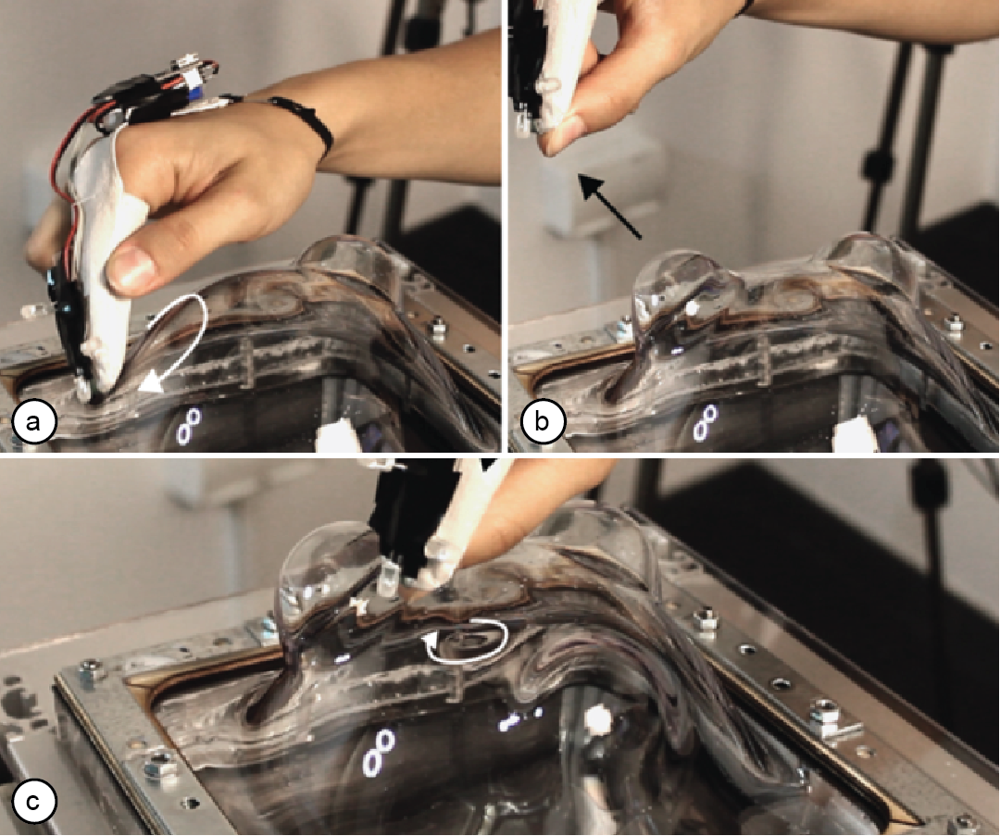 Figure 3: Making the teddy bear head: (a,b) drawing and extruding the left ear, (c) extruding an eye. Figure 4 shows the final teddy head made from a 30x30cm sheet (thickness: 4mm). Making the teddy head took only 9 minutes including the time for exploring different sizes for various parts of the design and also includes the time for heating and for letting the material become rigid again. We were able to explore different sizes at each interaction step for ca. 30 seconds before the material became rigid. 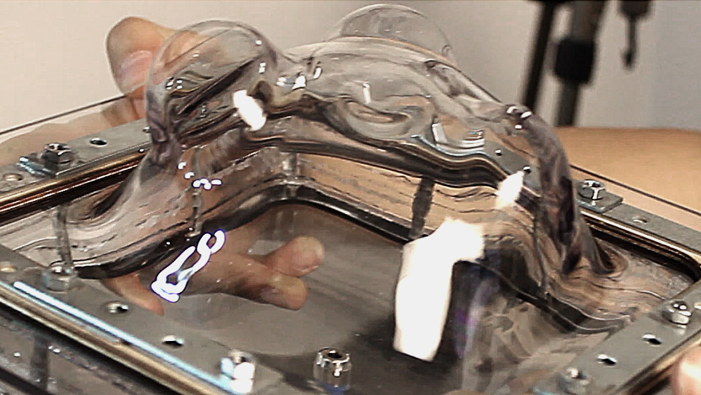 Figure 4: The sculpture of a teddy bear’s head. Hardware Figure 1 shows the hardware setup of our system. It consists of two main parts: (1) the user interaction tracking, and (2) the formative fabrication unit. #1 Tracking hardware
To track the user interaction, FormFab users wear a motion capture marker and a pressure sensor on their index finger (Figure 5). The marker is detected by a motion capture system (OptiTrack) and used to determine where the user is interacting on the workpiece. In addition, the pressure sensor is used to determine the beginning and end of the interaction. We can do this because in both interactions users apply pressure to the index finger either by touching the workpiece or by pressing the index finger to the thumb in the pinch gesture. 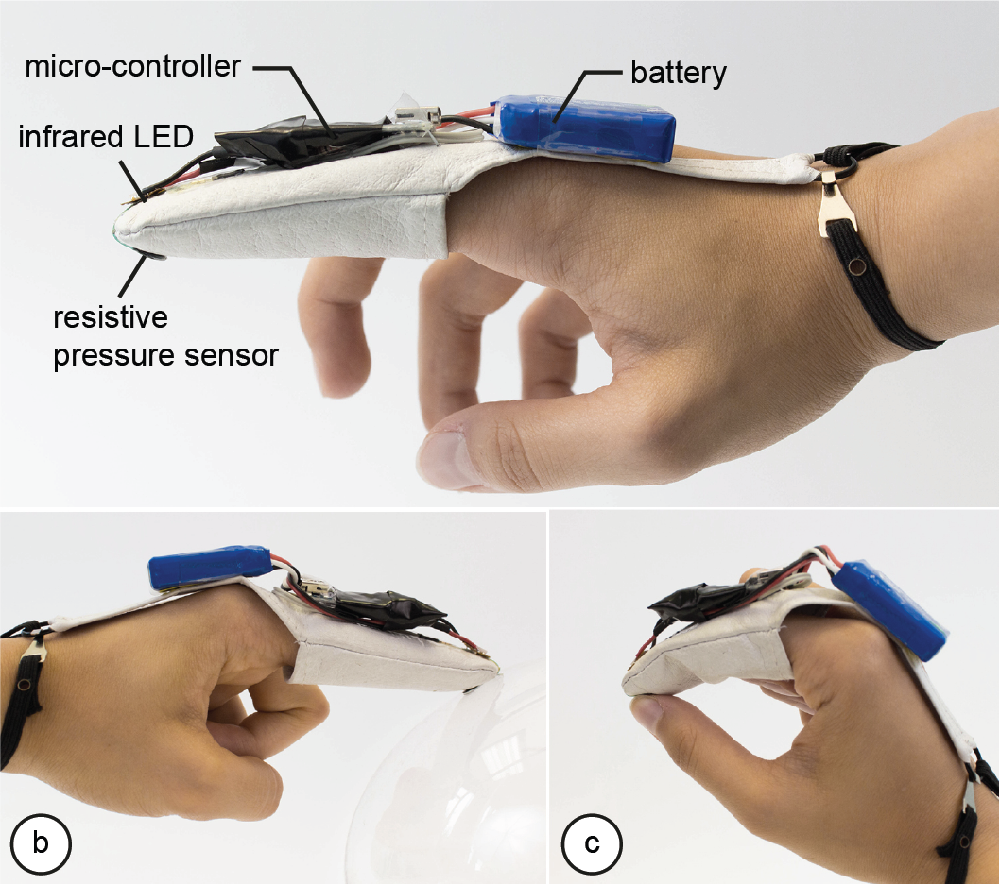 Figure 5: Tracking unit. Instead of using a passive retro-reflective marker, we use an active infrared LED marker that is turned on when the user applies pressure to the finger (an Arduino Nano connected to the pressure sensor processes the pressure values, then activates the LED). We are using an active marker because detecting passive markers requires the motion capture cameras to emit infrared light. The light causes reflections on our workpiece, which makes it difficult to detect the marker. By using the active marker, we were able to use the cameras with their infrared emission turned off. #2 Robotic arm
We use a 6-axis robotic arm (ABB IRB 120) to move the heat gun that warms up the workpiece. The six degrees of freedom allow the robotic arm to reach around the work-piece from all sides. In contrast to previous systems that achieve higher degrees of freedom by rotating the workpiece (e.g., the 5-axis device used for Patching Physical Objects [23]), the robotic arm keeps the workpiece stationary, thereby preserving the user’s spatial frame of reference during modeling. By mounting the robotic arm to the ceiling, we were able to maximize the reachable area while also allowing the user to freely move around the workpiece. #3 Heat gun
We heat the workpiece using heat guns that blow air onto the workpiece (Figure 6). We chose air for heating as it best distributes on surfaces of arbitrary geometry. A rigid array of radiator elements, in contrast, would lead to uneven heating as some points are located closer to the workpiece’s surface than others. Other contactless methods, such as an infrared-light array were not powerful enough to heat the thermoplastic sheet. We use two heat guns of different sizes. We use the larger heat gun (Ø3.5cm) for the first steps in the modeling process when the coarse base shape is created. We use the smaller heat gun (Ø0.7cm) for later steps when the user creates details. Both heat guns have a different working range (see section ‘Factors Influencing the Forming Process’). We determined the values experimentally and use them to optimize the heat transfer while preventing to overheat the material. 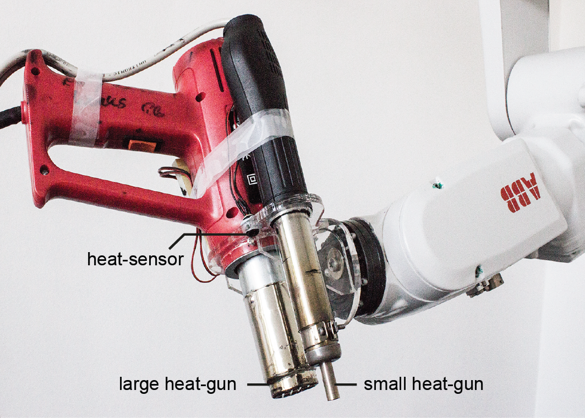 Figure 6: Heat guns and temperature sensor. Since the heat transfer is influenced by several factors that are hard to predict, we added a temperature sensor (Melexis MLX90620) to the robotic arm to determine the temperature of the workpiece (Figure 6). The sensor is wired to an Arduino Nano that informs FormFab’s main application about the current temperature values. The temperature sensor is passive and measures the infrared radiation emitted by the material when it warms up. Active sensors, such as an infrared laser thermometer, that first emit light and then measure its reflection did not work due to the transparent nature of our workpiece. #4 Pneumatic control system
To reshape the workpiece, FormFab uses a compressor (Universal II Profi-Airbrush) that compresses air up to 5 bar (Figure 7). To set the pressure value, the regulation unit expects a control voltage from 0 – 10 V. FormFab sets the voltage using an Arduino Uno connected to a digital potentiometer that regulates a 24V external power supply. 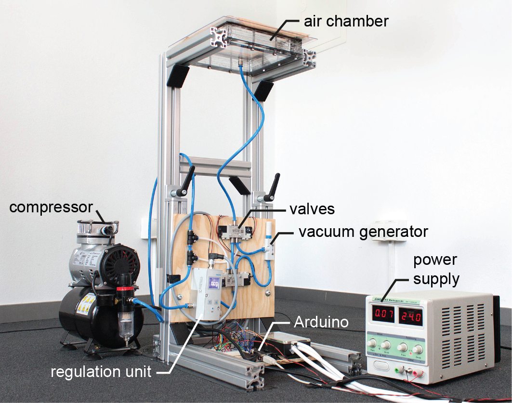 Figure 7: Pneumatic system: an Arduino controls how much pressure is applied and also switches the valves. The pressurized air is then guided through different valves, depending on whether pressure or vacuum should be applied to the workpiece. If pressure is applied, the pressurized air is directly forwarded to the air chamber to reshape the workpiece. If vacuum is to be applied, the pressurized air instead goes through a vacuum generator, which creates negative pressure in the air chamber, pulling the compliant workpiece inwards. To switch between pressure or vacuum, FormFab changes the valve configuration via the Arduino. After the user finished the interaction, our system keeps the air chamber at a constant pressure level until the workpiece has cooled down and has become rigid again - changing the pressure earlier to a neutral level would cause the workpiece to partly undo the latest deformation step. After the workpiece has cooled down, our system opens a valve to neutralize the air chamber, i.e., it releases any excess pressure. This is necessary because if the air chamber was still pressurized at the beginning of the next heating step, the workpiece would start to deform as soon as it becomes compliant, i.e., even without the user interacting. Software The software pipeline consists of the following processing steps: (1) tracking the outline the user is drawing, (2) calculating the heating path, (3) generating movement commands for the robotic arm, (4) monitoring the temperature to achieve compliance, and (5) applying air pressure via the pneumatic system according to user input. #1 Tracking the user interaction
The active infrared LED marker on the user's fingertip is detected by OptiTrack's motion capture software Motive. Since the infrared LED can cause reflections on the transparent and reflecting workpiece, we filter reflections that do not fit the LED's size and circularity. Motive streams the position data of the marker to the FormFab main application, which implements a client based on the NatNet SDK from OptiTrack. As soon as the user finishes drawing, the marker position is processed using OpenCV's shape detection algorithms. #2 Calculating the heating path
Based on the user's drawing, our software generates a heating path with the goal to heat up the area equally at all locations. Since calculating the heating path for an even heat distribution is difficult for arbitrary shapes, we limit FormFab’s modeling geometries to circles and lines. For heating up outline circles, we move along the path repeatedly until we reach the material’s compliance point. For heating area circles, we apply a spiral path that moves from the outline towards the center of the circle. When creating the spiral path, we have to adjust the distance between two lines of a spiral based on the heat gun radius, the distance to the workpiece, and the amount of airflow (see section ‘Factors Influencing the Forming Process’). If the lines are too close, the area will overheat, if lines are too far apart, the area will not heat up sufficiently (Figure 8). We also shift the heating path inwards to avoid heating areas outside the drawn area. The amount of shift is determined by the same factors as the spacing of lines. 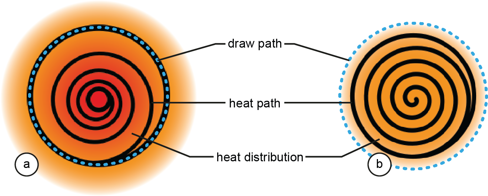 Figure 8: (a) overheating, (b) even heat distribution. #3 Robot movement
We installed the open-abb-driver [15] as a server on our robotic arm. This allows us to send real-time commands via a TCP/IP connection. It also allows us to receive information about the robotic arm's current state. The server processes movement commands in the robotic programming language RAPID that tells the robotic arm how to position the joints and how fast to transition between different positions (Figure 9). We generate these commands using the Grasshopper plugin Robots.IO [19]. 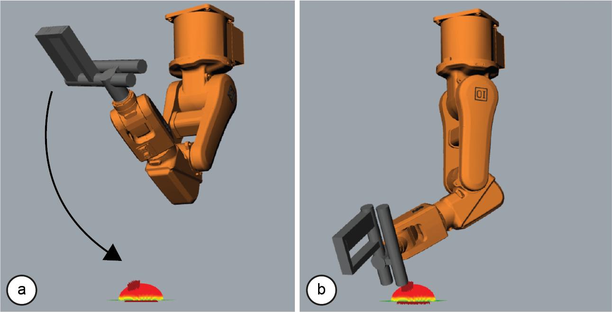 Figure 9: Calculating path for even heat distribution. Robots.IO also generates warnings in case a target position is located outside the working range of the robotic arm (e.g., because it exceeds a joint limit), which typically happens when the shape becomes too large and the robotic arm has to operate at the boundaries of its working volume. Robots.IO generates a different type of warning in situations where the robotic arm would collide with the workpiece. To allow Robots.IO to detect this case, the system has to provide it with a digital representation of the workpiece. We approximate the 3D model by simulating each modification applied to the workpiece (Figure 10). 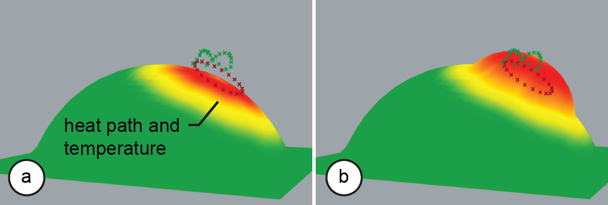 Figure 10: Our system computes a physical simulation on a digital counterpart of the physical workpiece. For this, FormFab uses the physical simulation environment Kangaroo Physics [10], which is available as a Grasshopper plug-in. First, our system uses the heat path and heat gun radius to define the virtual compliant area. It then adjusts the virtual air pressure according to the physical air pressure to determine the amount of extrusion. Our system also uses the resulting digital representation of the workpiece to orient the heat gun so as to always point at the workpiece at a perpendicular angle, allowing the system to heat the workpiece evenly. #4 Heat control loop
Robots.IO exports the RAPID code for the entire heating path into a .txt file. Uploading the entire code to the robotic arm would execute the path, but would not allow querying information about the robotic arm during that time. However, FormFab needs information about the robotic arm’s current position when it evaluates the current temperature data from the heat sensor as it otherwise does not know to where on the workpiece the measurement belongs. Our software thus splits the RAPID code into separate motion commands and sends them one-by-one to the communication server running on the robotic arm. Once the heat-sensor has determined that the material has reached its compliance point, FormFab stops the heating process and moves the robotic arm to its default position, i.e., out of the way of the user. #5 Pneumatic control
Before turning on the pneumatic system, our software detects the direction of user input. When the user first performs a pinch gesture, our system sets the position of the user’s hand as the origin from which to measure (Figure 11a). For every 3 mm of hand movement, our system increases or decreases the control voltage of the pneumatic regulation unit by one step, slightly increasing or decreasing the pressure inside the workpiece (Figure 11b/c). The exact pressure depends on the size of the compliant area. Pushing out smaller areas requires substantially higher pressure than pushing out larger areas. The reason for this is that the force available to push out a compliant area is the amount of pressure times the size of the area. FormFab compensates for this by applying a factor depending on the radius of the area. 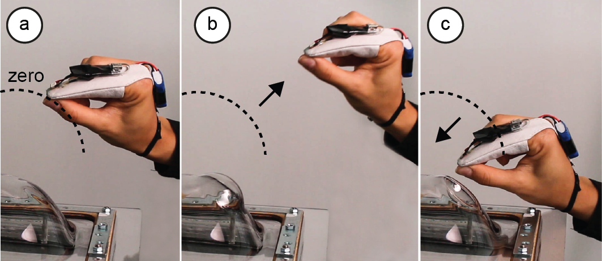 Figure 11: (a) Zero level. (b) Increase pressure. (c) Decrease pressure, then switch to vacuum. FormFab keeps track of the number of increments and decrements sent to the pneumatic regulation unit. This allows it to switch the valve from vacuum to pressure and back at the right moment and to neutralize the air chamber to zero bar, when needed. Factors Influencing the Forming Process In this section, we provide more details on the factors that influence the forming process and the resulting shapes. #1 Size of Heated Area
The more the heat spreads on the workpiece, the shallower the temperature gradient at the edge of the heated area, thus the smoother the extrusion. While the heat gun supplies an initial source temperature, several factors influence the amount of heat that reaches the workpiece and how the heat distributes (Figure 12). 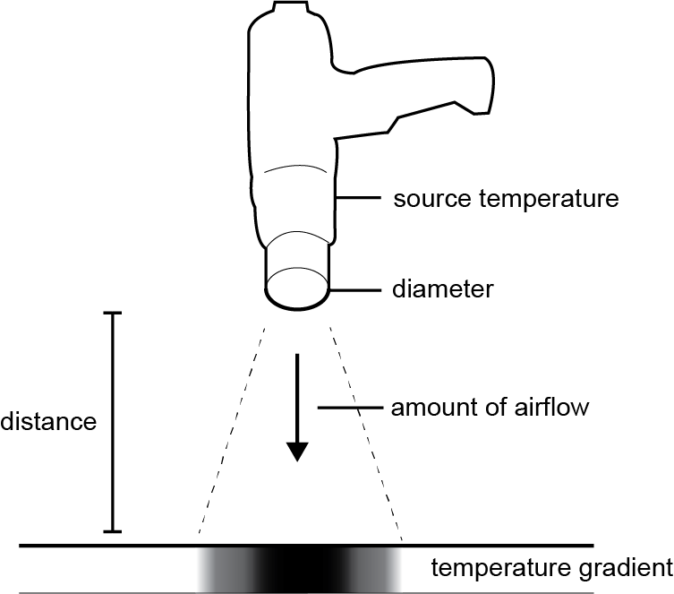 Figure 12: Factors influencing the heat distribution. Each heat gun has a fixed opening through which the hot air exits (i.e., the diameter). Since the heat gun is located at a distance, the heat further spreads before it reaches the workpiece. The larger this distance, the bigger the spread. The heat gun’s airflow also helps spread heat across the workpiece. The more airflow, the faster the heat spreads. #2 Amount of Stretch
As illustrated by Figure 13, the thicker the workpiece, the further it can be stretched before it starts to tear. We typically use sheets of 2 mm – 6 mm thickness but even a 1 mm sheet of PETG plastic can be stretched to create a shape larger than a human’s head (see Figure 16). 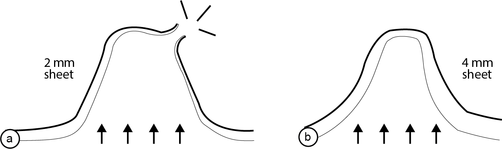 Figure 13: (a) This 2 mm sheet is stretched too far. (b) The thicker 4 mm sheet can accomplish this shape. However, thicker sheets also need more time to heat up. The reason for this is that we warm up the workpiece from the outside using a heat gun, thus the heat needs time to propagate through the thickness of the sheet (Figure 14). If we apply heat too fast, the top surface of the sheet may overheat while the bottom surface is still cold; this can lead to heat bubbles that might tear when pressure is applied later on. This problem is amplified with thicker sheets, as the heat takes longer to propagate through. 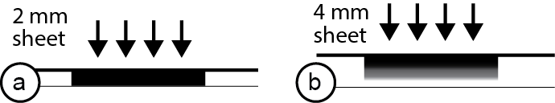 Figure 14: Since the heat comes from the top, it requires less time to sink through (a) a thin workpiece than (b) a thicker workpiece. The amount of stretch is also affected by the amount of pressure applied and the size of the area. To reshape an area, the system has to apply a certain force to overcome the elasticity of the material in its compliant state. The smaller the compliant area, the more pressure or vacuum is required because the force for reshaping is proportional to the size of the area and the applied pressure (Figure 15). As the compliant area gets stretched, its size increases and its thickness decreases, leading to less resistance and thus a larger force on the area overall. Thus, over time, less and less pressure is required to keep stretching the area. If the pressure is kept constant, the expanded area might tear due to the excess pressure or the area might keep expanding even though the user already finished interacting. Our system estimates the size of the expanding area and approximates the pressure for the desired expansion rate. 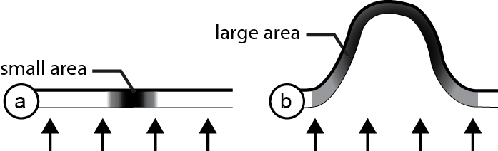 Figure 15: (a) Applying the same amount of pressure to a small area (no resulting extrusion) and (b) a big area. Finally, the hotter the material, the easier it is to stretch. However, heating beyond the compliance point raises the chances of overheating and undesired heat bubbles. #3 Best Materials to Use
There are two main factors that influence how suitable a material is for our purposes: (1) materials with a low-compliance point allow spending less time on heating; (2) materials with a high stretch-ability allow using thinner sheets, which again reduces the heating time. We looked at four different thermoplastics, including PETG, ABS, PC, and PMMA. The compliance point can be extracted from the data sheets of each material. We found PETG to have the lowest compliance point. Next, we determined stretch-ability by running an experiment in which we repeated the same heating path until we reached each material’s compliance point. We then applied the same pneumatic pressure. Figure 16 shows three characteristic results, all created from a 1 mm sheet. PETG performed best; ABS led to a medium-sized extrusion, while PC only led to a minor extrusion. Since PETG performed best on both scales, we used it in our system. 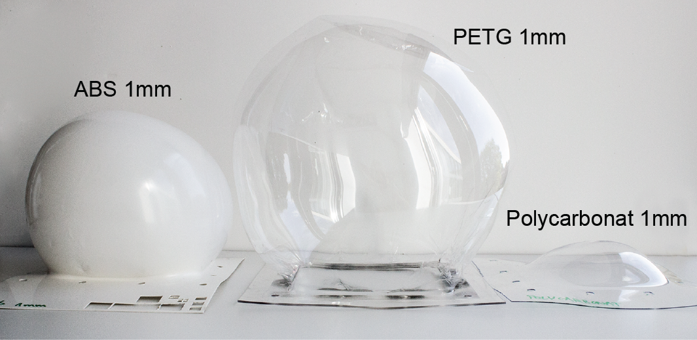 Figure 16: Results from our material stretch test. Interaction Space In its current form, our system only supports simple gesture input for circular and elliptical shapes and for defining the extrusion amount. Interactions in FormFab could be further enhanced by encoding constraints and action sequences into tools and by including alignment and snapping functionality, such as illustrated in constructable [14] and other interactive fabrication tools. For instance, a multi extrusion tool could allow users to extrude both ears of the teddy bear head sculpture simultaneously (Figure 17a), while a copy/paste tool could replicate an existing shape at another location (Figure 17b). 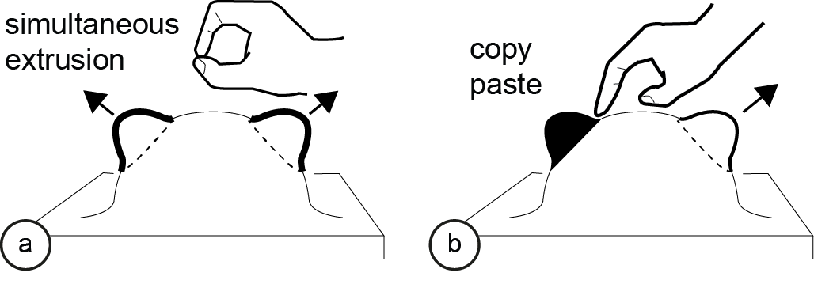 Figure 17: Different tools: (a) simultaneous extrusion of both ears, (b) copy pasting the left ear to the right side. Similarly, snapping functionality could allow the user to extrude a shape in equal increments (Figure 18a), while alignment functionality could allow users to extrude a part until it reaches the same height as a previously selected part (Figure 18b). 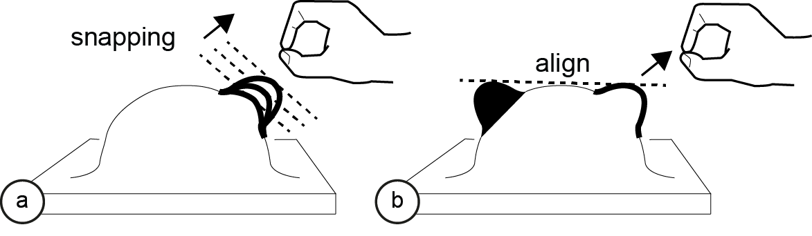 Figure 18: (a) Snapping the shape to fixed increments to provide guidance. (b) Aligning the right ear height to the left ear height. Design Elements While our approach is limited to decorative objects that consist of shapes producible with thermoforming, we can vary the heat distribution across a shape to achieve different outcomes. Outline vs. Area Shape
As illustrated by Figure 19a, by heating up only the outline of a shape and leaving the inside at room temperature, we can achieve a plateau. Heating up the entire area in contrast results in a half sphere (Figure 19b). 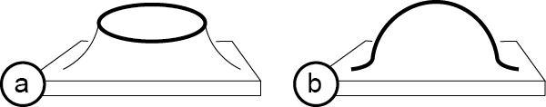 Figure 19: Heating: (a) outline only, (b) entire area. Figure 20 shows this at the example of a head sculpture that also has a neck. The neck is made first using a circular outline shape, the basic head shape is added in a second step using a circular area shape. 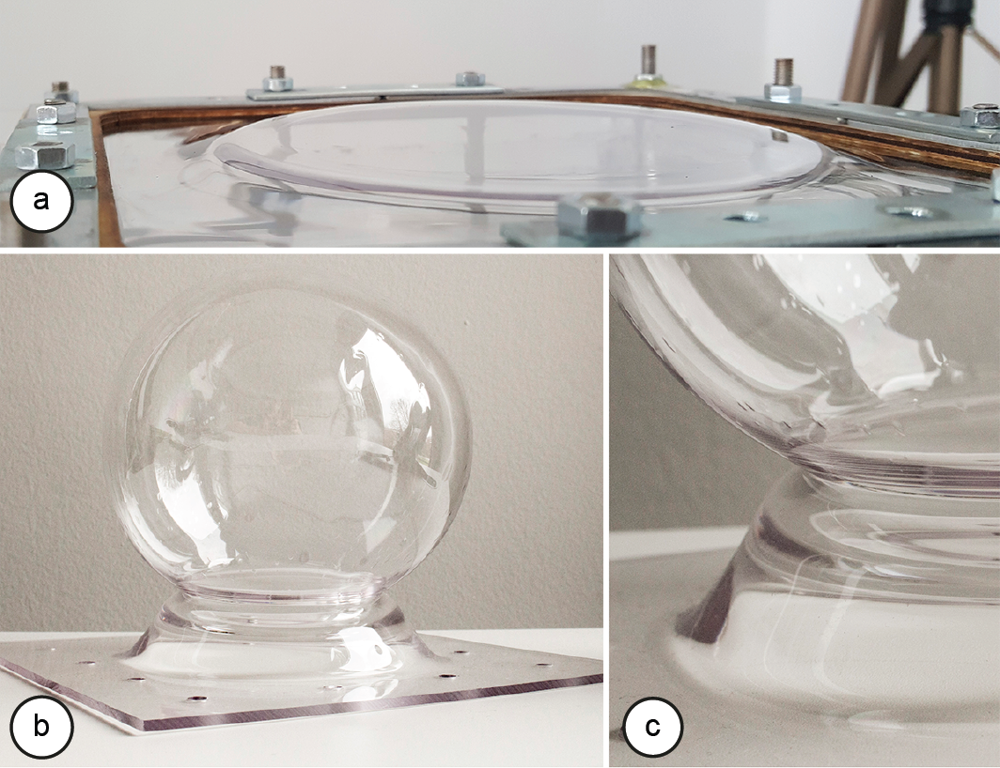 Figure 20: First steps of making a head sculpture with neck. (a) outline shape for neck, (b,c) adding the head. Homogeneous vs. Heterogeneous Heating
In Figure 19 both shapes were created using homogeneous heating, i.e., the entire outline or area is heated up equally. Figure 21 uses the same basic outline/area shapes, but this time with an unequal heat distribution. As can be seen, the hottest point will expand furthest as the material is more compliant than in other areas.
 Figure 21: Heterogeneous heating: (a) a tilted plateau shape from an outline, (b) a tilted area shape.
Conclusion & Future Work
In this paper, we showed a first prototype implementation of an interactive fabrication system that provides the user with continuous physical feedback while the user is interacting. While the first step of selecting the area still followed the turn-taking model, the second step of defining the size of the shape provided the user with continuous physical feedback, thereby bringing the principles of direct manipulation to the editing of physical objects.
For future work, we plan to explore how to make the setup more compact by integrating the heating elements directly with the plastic sheet. This would allow us to remove the robotic arm and heat guns. In addition, we plan to explore additional design elements (outline vs. infill heating, equal vs. unequal heat distributions), and add gestures that encode constraints and action sequences, such as copy pasting existing shapes, similar to those that were illustrated in previous interactive fabrication systems. Finally, we plan to explore thermo-elastic materials, i.e., a material that is rigid when cold, but elastic when warmed up, which could potentially enable a completely reversible workflow.
Figure 21: Heterogeneous heating: (a) a tilted plateau shape from an outline, (b) a tilted area shape.
Conclusion & Future Work
In this paper, we showed a first prototype implementation of an interactive fabrication system that provides the user with continuous physical feedback while the user is interacting. While the first step of selecting the area still followed the turn-taking model, the second step of defining the size of the shape provided the user with continuous physical feedback, thereby bringing the principles of direct manipulation to the editing of physical objects.
For future work, we plan to explore how to make the setup more compact by integrating the heating elements directly with the plastic sheet. This would allow us to remove the robotic arm and heat guns. In addition, we plan to explore additional design elements (outline vs. infill heating, equal vs. unequal heat distributions), and add gestures that encode constraints and action sequences, such as copy pasting existing shapes, similar to those that were illustrated in previous interactive fabrication systems. Finally, we plan to explore thermo-elastic materials, i.e., a material that is rigid when cold, but elastic when warmed up, which could potentially enable a completely reversible workflow.